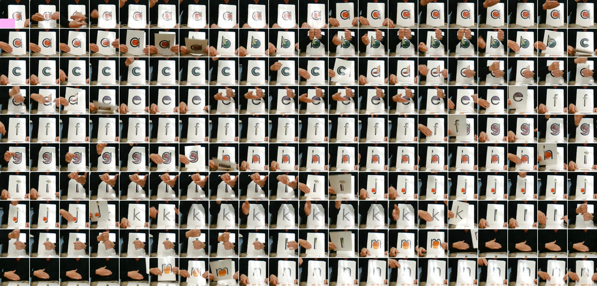
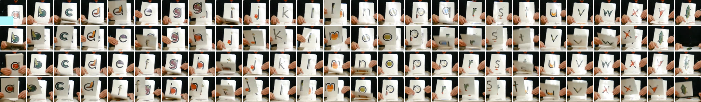
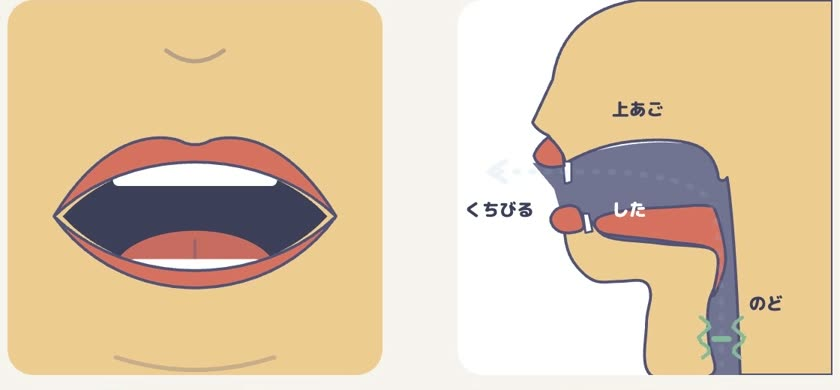
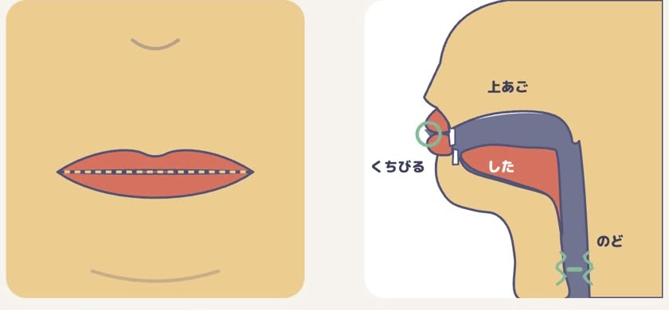
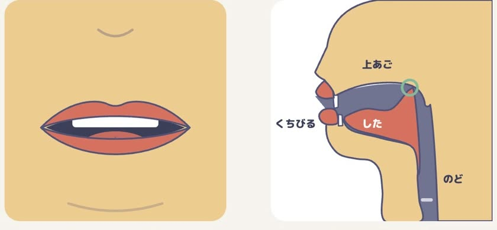
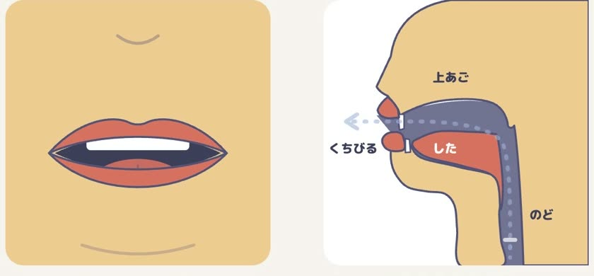

1 · 完成品
音を出して、見てください。
3本とも「お手本 → くちのかたち → まねっこ → まとめ」1920×1080・30fps。書き出しは1本 49〜54秒（実測）。AI の映像生成・合成音声は使っていません。
PROS PHONICS / 成果物 · a・b・c
正本メソッド動画から、マーク先生の実演を文字ごとに切り出しました。声は加工せずにそのまま使い、口の中の動き（くちびる・舌・のど・息）を図で見せます。1文字1本、まず a・b・c の3本です。
1920×1080・30fps。書き出しは1本 49〜54秒（実測）。AI の映像生成・合成音声は使っていません。
| 守る点 | 今回 | 中身 |
|---|---|---|
| 音 | ○ | 先生の提供音そのまま。音量・速さを変えていません（元との差 0.03dB 以内）。口の場面とまねっこでは、先生の1回だけが鳴ります。 |
| 口 | ○ | 音の瞬間に、先生の口の拡大と口の図が見えます。口の拡大には、手が口にかからない回を選びました。 |
| 動作 | ○ | お手本の場面で、先生の正本の身ぶりを音と同時に見せます（先生の実演そのもの）。 |
| 文字の形 | △ | 音の瞬間に、正本の文字（小文字の形の中にキャラがいる意匠）が画面にありません。先生が持つカードが映るのは、お手本の場面だけです。直し方：口の場面とまねっこに、正本の文字を置きます。 |
| 絵柄 | ○ | 音だけで、文字の名前は言いません。1本1文字。テロップに「「エ」の口で「ア」」などカタカナの目安を使っている点は、先生方に確認をお願いします。 |
| AI 生成アバター（これまで） | 実写＋計測＋図（今回） | |
|---|---|---|
| 音 | 先生の実音を後から重ね、口とのずれを調整 | 先生の映像と音をそのまま使うので、ずれない |
| 口の形 | 生成まかせで、音ごとの口の形は保証されない | 先生の口元を10コマ/秒で見て、音の測定と合わせて図を動かす |
| 口の中 | 見せられない | 舌の奥・くちびるの閉じ・のどの振動・息を、横から見た図で |
| 楽しさ | キャラクターで目を引く | 先生の身ぶりそのもの。キャラクターはない |
| 作り直し | 生成のたびに結果が変わる（有料の生成も） | 数値とコードで決まる。直す所だけ直して書き出せる |
| 向く場面 | 導入・興味づけ | 練習・発音の確認 |
正本メソッド動画の「0:28 a-z/絵付き」〜「5:00」の272秒を、1080p で取得。
区間には a〜z が2周入っていました（1周目 0:28〜3:25 は1字5〜10秒、2周目 3:26〜4:56 は1字2〜4秒）。絵カードの見た目の自動判定は手が重なって崩れたため、カード部分を0.5秒ごとに並べた一覧を目で読み、切り替わりの直後で音が最も途切れる位置で切りました。


タイムマップとの照合：1周目の a〜c は一致。2周目は叩き台で「1字10秒」とされていますが、目視では1字約3秒で 4:57 に z まで終わります（2周目を使う時は要確認）。
音の区間（20ミリ秒ごとの大きさ）、声帯の振動（有声率）、母音の響き（F1/F2）を測り、先生の口元を10コマ/秒で確かめて決めました。下の帯が3回です。
| 字 | 3回（クリップ内） | 長さ | 声帯の振動 | 母音の響き F1/F2 | 口元 |
|---|---|---|---|---|---|
| a | 7.56・8.61・9.68秒 | 0.39〜0.45秒 | あり | 約810〜860 / 約1700Hz（/æ/ の値） | 口を横に大きく開け、下の歯が見える |
| b | 2.30・3.50・4.70秒 | 0.31〜0.35秒 | あり | 約440 / 約1300Hz（破裂のあとの弱い母音） | くちびるを閉じてから開く |
| c | 2.46・3.65・4.81秒 | 0.29〜0.30秒 | ほぼなし（0〜17%） | —（母音なし） | くちびるは大きく動かず、少し開いたまま |
あごの開き・くちびるの横引き・丸め・閉じ・舌先・舌の前・舌の奥・息・のどの振動。この9つ（0〜1）を、3回の時刻に合わせて動かします。




図はこの教材のために描き起こしたもので、先生の映像の時刻から計算して動かします。先生の声は元の映像の音をそのまま使い、スローと止め絵では音を出しません。同じデータから何度書き出しても同じ動画になります。
| 項目 | 内容 | どなたに |
|---|---|---|
| 文字の形 | 音の瞬間に正本の文字を置く直しを入れてよいか（5点の △） | 先生方 |
| 音の方針 | 破裂音のあとの母音（b・d・g・j・p）を今のままにするか、pure sound にするか | 先生方 |
| 音量 | 3本の音量が a -17.8・b -22.4・c -21.7 LUFS と違います（元動画の差）。そろえるには先生の音の音量を変える必要があります | 先生方・KT |
| 顔と声の使用 | マーク先生の顔と声を新しい教材に使うことへの、ご本人の了承と範囲 | 学校 |
| 制作ソフトの条件 | Remotion（動画を作るソフト）は、従業員4人以上の営利組織では有料ライセンスが必要 | 学校・KT |
~/video-studio/engine/src/videos/phonics-abc/、素材と権利の記録 ~/video-studio/projects/phonics-abc/brief.md、52本と目次 ~/video-studio/projects/pros-phonics-az/index.csv、26字の測定表 phonics_table.csv